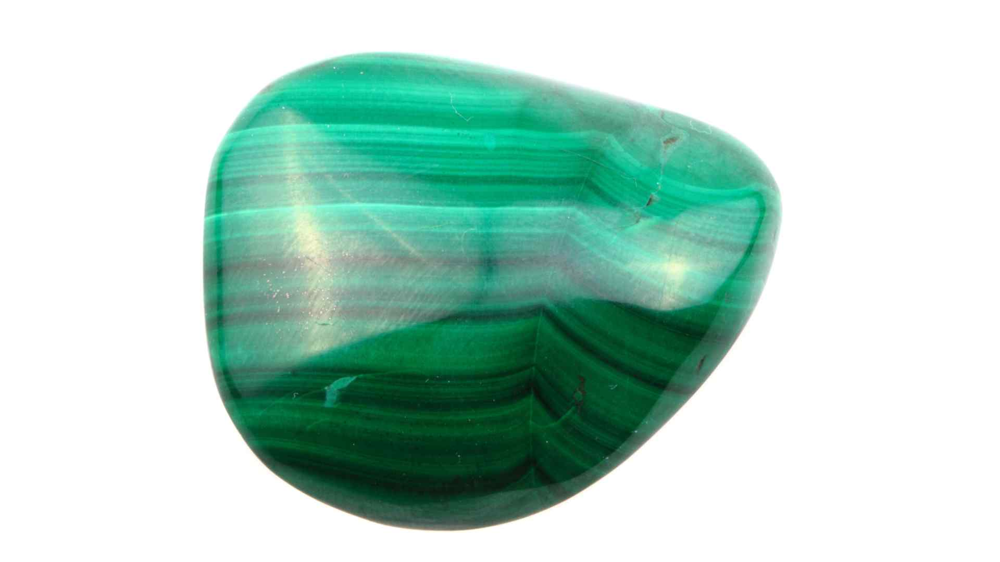
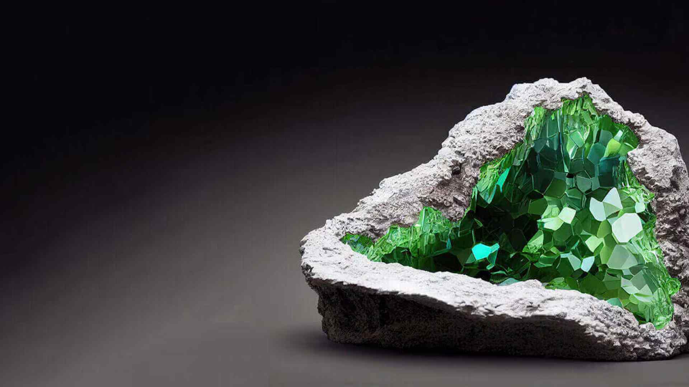

Exploring the Differences: Malachite vs Emerald Showdown
In the showdown between malachite and emerald, you'll discover the fascinating distinctions between these two green gems, rooted in their unique origins, chemical compositions, and astrological connections. While both share the allure of vibrant green color, their differences in hardness, clarity, and value underscore the distinct worlds they emerge from—malachite, known for its banded light and dark green hues, and emerald, cherished for its rich, translucent green and rarity.
This article delves into the physical and chemical properties distinguishing emerald's precious status from malachite's transformative appeal, alongside exploring their cultural significance and practical care. As you navigate through the comparison of these green gems, you'll gain insights into their refractive index, durability, and how their scarcity and rarity affect their value and use in jewelry.
Physical and Chemical Properties of Emerald
Emerald, scientifically known as Be3Al2Si6O18, is a gemstone variety of the mineral beryl, distinguished by its rich green color primarily due to trace amounts of chromium and vanadium [12] [16]. This gemstone is renowned for its hardness, scoring 7.5 to 8 on the Mohs scale, which makes it significantly durable but less hard compared to diamonds, rubies, and sapphires [9] [12] [14] [15]. Here are some critical physical and chemical properties of emeralds:
Crystal Structure and Optical Properties:
- Crystal System: Hexagonal.
- Refractive Index: Ranges from 1.566 to 1.602, contributing to its brilliant sparkle.
- Birefringence: Between 0.004 and 0.010, indicative of the crystal's double-refracting nature.
- Dispersion: 0.014, affecting the way light spreads into spectral colors within the gem.
Physical Durability and Care:
- Specific Gravity: Typically between 2.67 and 2.78, which helps in identifying genuine stones [12] [13] [14] [15].
- Cleavage: Emeralds have imperfect cleavage and are prone to fracturing, requiring careful handling to avoid sudden impacts [9].
- Enhancement: Approximately 90% of emeralds are treated with oils or resins to enhance clarity, making them sensitive to heat and harsh cleaning methods [9] [10].
Variability and Aesthetics:
- Color Variations: While predominantly green, emeralds can also exhibit a bluish tint. The intensity of the green color, influenced by its chromium or vanadium content, significantly impacts its value [1] [12] [16].
- Inclusions: Known for their three-phase inclusions and sometimes visible calcite or pyrite, these characteristics are not only accepted but often expected in emeralds, adding to their unique natural beauty [16].
Emeralds are not only cherished for their aesthetic appeal but also for their rarity and value, which are closely tied to their physical and chemical properties. [12]
Physical and Chemical Properties of Malachite
Chemical Composition and Structure
- Chemical Formula: Malachite is composed of Cu2(CO3)(OH)2, indicating its basis as a copper carbonate hydroxide mineral [21] [22] [23].
- Crystal System: Malachite crystallizes in the monoclinic system, often forming prismatic crystals or radiating fibrous masses [1] [21] [22].
Physical Characteristics
- Hardness and Density: With a Mohs hardness of 3.5 to 4, malachite is relatively soft, making it prone to scratches and abrasion. It has a specific gravity ranging from 3.6 to 4.05, which is indicative of its dense composition [1] [22] [23] [26].
- Color and Form: The mineral is predominantly bright green, with variations that can include blackish green and banded patterns. Malachite is famous for its concentric banded appearance, resembling the eye of a peacock in some specimens [21] [22] [25] [26].
Optical and Surface Properties
- Refractive Index and Birefringence: Malachite has a high refractive index from 1.655 to 1.909, contributing to its notable birefringence of 0.254, which can affect the visual perception of depth and color [22].
- Luster and Transparency: The luster of malachite can range from adamantine to vitreous and even silky if fibrous. It is generally opaque, which affects its use in jewelry to mostly ornamental pieces [1] [21] [22].
- Cleavage and Fracture: It exhibits perfect cleavage on {201} making it very sensitive to cutting and shaping. Malachite often shows a splintery fracture, further complicating its handling [21] [22].
Cultural Significance and Historical Use of Malachite and Emerald
Emerald: A Gem of Loyalty and Fortune
- Astrological Beliefs and Anniversaries: Emeralds are not only admired for their beauty but are also believed to bring good luck, enhance memory, and boost creativity [11]. They are traditionally gifted on the 20th and 35th wedding anniversaries, symbolizing loyalty and reliability.
- Geographical Significance: Predominantly found in Colombia, Zambia, and Brazil, Colombian emeralds are particularly prized for their superb quality and are often more expensive.
Malachite: From Ancient Art to Modern Healing
- Historical Mining and Uses: Malachite has been mined for over 5000 years, with ancient Egyptians using it for ornaments, pigments, and medicinal purposes [23] [24]. It was also used in traditional Chinese medicine to relieve various ailments and in Russia for religious artifacts.
- Metaphysical Properties: Known for its protective qualities, especially during pregnancy and childbirth, malachite is considered a stone of transformation and spiritual wisdom [24] [26]. It has been used historically to protect against evil spirits and to promote healing.
Symbolic and Practical Applications
- Protective Amulets and Pigments: In ancient times, malachite was often carved into amulets to ward off the Evil Eye and used as a vibrant green pigment in paintings [23] [28].
- Cultural Beliefs: It was believed to protect merchants and travelers, increase wealth, and bring tranquil sleep when held [28]. In Italy, malachite amulets were popular for protection against negative influences [28].
Care and Maintenance of Malachite
Cleaning Techniques:
- Begin by gently wiping malachite with a soft cloth; for more persistent dirt, use a mild soap or dishwashing detergent with gentle rubbing [20].
- Avoid using water for cleansing, as malachite's soft nature makes it sensitive to water exposure [27].
- For a deeper clean, malachite can be soaked in soapy water overnight, but ensure not to use bleach as it can damage the stone due to its carbonate content [30].
Storage and Handling:
- Store malachite in a soft pouch such as velvet or satin, in a separate compartment of a jewelry box to avoid scratches [29].
- Protect the stone from direct sunlight, extreme temperatures, and moisture to maintain its vibrant color and integrity [29].
Energetic Cleansing and Charging:
- Malachite can be energetically cleansed by surrounding it with quartz crystals overnight or placing it on a selenite slab for up to a day [27].
- To charge malachite, expose it to moonlight by setting it in a space that receives direct moonlight [27].
RELATED TOPIC: Exploring the Diverse World of Purple Crystals and Gemstones
Care and Maintenance of Emerald
Cleaning and Storing Your Emerald Jewelry
To maintain the luster and integrity of your emerald jewelry, follow these essential care guidelines:
Cleaning Process:
- Gently clean your emerald with warm soapy water using a soft cloth; avoid soaking the gemstone as it can weaken the setting [9] [10].
- Steer clear of harsh detergents and never use solvents like alcohol or acetone, which can damage the gem [9].
- After cleaning, dry the jewelry with a soft, clean microfiber towel to prevent water spots [10].
- Avoid ultrasonic cleaners and steam cleaning, as these methods can cause damage to emeralds [10].
Handling and Storage:
- Remove emerald jewelry before engaging in physical activities such as sports or gardening to prevent scratches or impacts [9].
- Store your emerald pieces in separate envelopes or soft pouches to avoid contact with harder jewelry that might scratch them [9] [10].
- Ensure that emeralds are kept away from extreme temperatures and direct sunlight, which can cause color fading or structural damage [9].
Preventative Maintenance:
- Check the settings of your emerald jewelry periodically to ensure the stones are secure; this prevents loss and extends the lifespan of your jewelry [9].
- Be mindful of sudden temperature changes and avoid exposing emeralds to direct heat, as it can lead to fracturing [9].
By adhering to these care instructions, you can preserve the beauty and durability of your emerald jewelry for years to come.
Pricing and Value Considerations
When comparing the economic aspects of malachite vs emerald, the differences are significant due to factors like rarity, demand, and aesthetic qualities. Here's a detailed look at their pricing and value:
Emerald Value Factors:
- Price Range: Emeralds are priced between $500 and $1,100 per carat, depending on quality factors [31].
- Quality Determinants: The 'Four Cs'—color, clarity, cut, and carat weight—significantly influence emerald values. High-quality emeralds display a rich, saturated green color with a velvety appearance [32] [33].
- Geographic Origin: Colombian emeralds are particularly valued for their superb quality, while Ethiopian emeralds, newer to the market, can vary more in color and clarity [33].
- Treatment: Traditional oil treatments are common to enhance the appearance of emeralds, affecting their market value [33].
Malachite Value Factors:
- General Pricing: Malachite is considerably less expensive than emerald, reflecting its abundance and lower demand [31] [34].
- Artistic Value: The value of malachite often depends on the size and craftsmanship of the piece. Unique crystal habits, distinctive patterns, or chatoyancy can increase its value [34].
- Combination Pieces: Rocks that combine malachite with other colorful copper minerals generally fetch higher prices than those composed purely of malachite [34].
Utilization and Minor Ore Status:
- Applications: Besides jewelry, malachite is used for creating small sculptures, pigments, and tumbled stones, which contributes to its market presence [23].
- Copper Ore: Malachite also serves as a minor ore of copper, adding another layer to its economic value [23].
Conclusion
Through an in-depth exploration of the distinct spheres from which malachite and emerald originate, their unique physical and chemical properties, cultural significances, and practical aspects of care and maintenance have been thoroughly examined. The journey from their deep-seated origins to their revered positions in jewelry and beyond reveals a compelling narrative of beauty, durability, and value. This comparison not only highlights the striking differences in hardness, clarity, and rarity but also underscores the significant impact these factors have on the gemstones' overall appeal and market values.
Reflecting on the insights gathered, it becomes evident that while emerald and malachite share a common allure in their vibrant hues, they cater to different tastes, preferences, and applications. The rich, translucent green of emeralds, coupled with their rarity, positions them as prized possessions in the realm of precious gemstones. In contrast, malachite's transformative appeal, characterized by its banded patterns and historical significance, offers a more accessible but equally captivating charm. This exploration not only enriches our appreciation for these gemstones but also inspires further research and exploration into their multifaceted worlds.
FAQs
- How do emerald and malachite differ?
Emeralds are generally more expensive and less resistant to breaking compared to malachite. Malachite, while slightly softer, maintains high clarity and is durable enough for use in various jewelry types. It has been a popular choice for both gemstones and sculptural materials for thousands of years.
- What are the identifying features of malachite when found in nature?
Malachite can be recognized by its bright green color, with crystals that can appear in deeper shades of green, ranging up to very dark or nearly black. When light passes through malachite, it may exhibit a green to yellowish-green hue.
- What are the believed benefits of malachite?
Traditionally, malachite is thought to offer protection from dangers and assist in fighting illnesses. It is reputed to shield against falls and aid in the healing of tissues when applied to bruises and broken bones. Malachite is also believed to absorb negative energies and disharmony.
- How should one select malachite?
Malachite is exclusively available in shades of green, but the intensity varies. For a more understated appearance, opt for malachite with light green tones and whitish patterns. If you prefer something more striking, choose a piece with dark green color and prominent black markings.
References
- [1] - allmineralsrock.com - Emerald vs Malachite Comparison
- [2] - comparenature.com - Malachite vs Emerald
- [3] - allcrystal.com - Malachite Crystals
- [4] - quora.com - What colour is malachite and have you ever owned any?
- [5] - geology.com - Green Gemstones
- [6] - navratan.com - Malachite Meaning, Properties, and Benefit
- [7] - allmineralsrock.com - Jade vs Malachite
- [8] - serendipitydiamonds.com - Malachite Green Gemstone: Rich History and Meaning
- [9] - emeralds.com - Caring for Emerald Jewelry
- [10] - jrcolombianemeralds.com - FAQs
- [11] - quora.com - Engagement and ring care
- [12] - multicolour.com - Emerald Physical Properties
- [13] - gemstones-guide.com - Physical and Optical Properties of Emeralds
- [14] - geologyscience.com - Silicates Minerals: Emerald
- [15] - hyperphysics.phy-astr.gsu.edu - Minerals: Emerald
- [16] - geo.libretexts.org - Gemology: Emerald
- [17] - snr.unl.edu - Birthstones: Emerald
- [18] - quora.com - Jade vs Malachite
- [19] - kaelindesign.com - Marvelous Malachite
- [20] - quora.com - How to clean a malachite stone
- [21] - geologyscience.com - Minerals: Malachite
- [22] - mindat.org - Mineral: Malachite
- [23] - geology.com - Minerals: Malachite
- [24] - ancient-origins.net - Artifacts: Malachite
- [25] - jewelsforme.com - Gem and Jewelry Library: Malachite
- [26] - marketsquarejewelers.com - Malachite: History, Properties, Symbolism
- [27] - wikihow.com - How to Cleanse Malachite
- [28] - gemsociety.org - History and Legend of Malachite
- [29] - getnamenecklace.com - How to Clean Malachite Jewelry
- [30] - mindat.org - Mineralogy Message Board
- [31] - chromagems.com - Gemstones by Value
- [32] - emeralds.com - Price of an Emerald
- [33] - quora.com - Difference Between Emeralds and Other Green Stones
- [34] - gemsociety.org - Malachite Jewelry and Gemstone Information
- [35] - pubchem.ncbi.nlm.nih.gov - Malachite Green